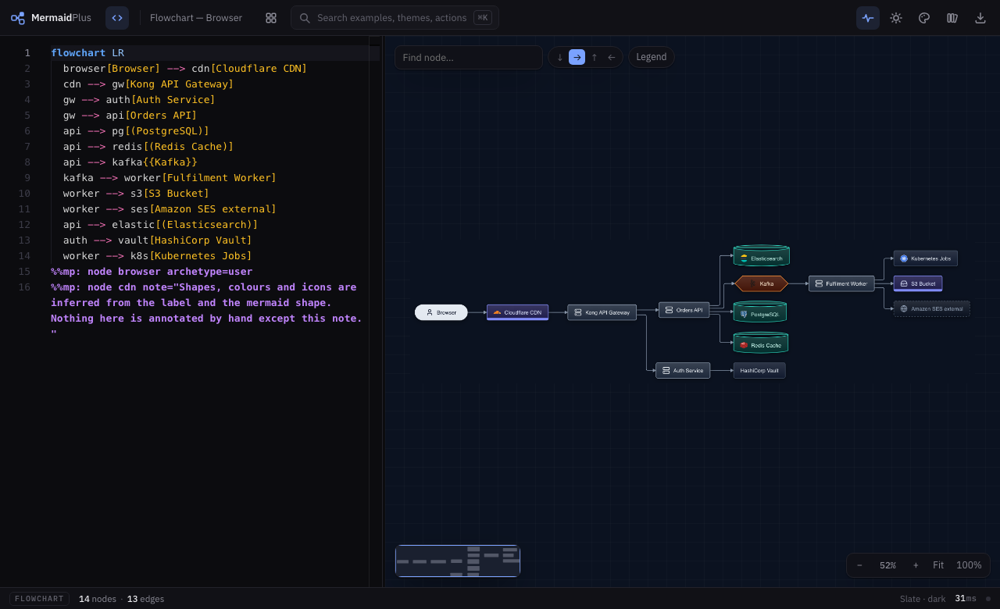
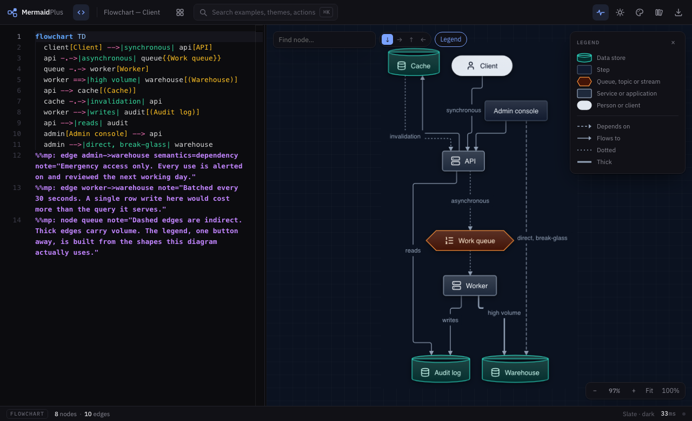

Chapter 2
Shapes and icons
You did not draw any of this, and you did not annotate it either. A node
called PostgreSQL becomes a database cylinder wearing the
Postgres mark, purely because of what you called it.

One idea: the archetype
Every node is assigned an archetype — one of
service, database, queue,
storage, user, external,
process, decision, note or
default.
That one value decides the shape, the fill, the stroke, the text colour, whether the border is dashed, and which glyph appears. Everything else on this page is about how that value gets chosen.
How it is chosen
Four rules, in order. The first one that answers wins.
-
Your directive
If you said so, that is the answer.
%%mp: node api archetype=service
-
The Mermaid shape you typed, if it means something
Only four shapes carry unambiguous meaning:
You write Shape Archetype db[(Orders)]cylinder database q{{Events}}hexagon queue ok{Valid?}diamond decision n>Remember]odd note Stadiums, circles and the rest are geometry, not meaning, so they decide nothing.
-
Whole words in the label
The label is split into words and checked against six lists, in this order. First list with a hit wins.
Archetype Words database db, database, postgres, postgresql, mysql, mongo, mongodb, redis, cache, dynamodb, sqlite, rds queue queue, kafka, sqs, rabbitmq, topic, stream, pubsub, broker storage s3, bucket, blob, storage, filesystem, cdn user user, client, browser, customer, actor, person external external, third-party, vendor, stripe, twilio, github service service, api, server, worker, lambda, gateway, handler, microservice, daemon, job Whole words, never substrings. "Passport service" is not a database because of pass. "Order Service" is a service because the word service is actually there.
-
Otherwise, default
A plain box with your bracket shape, if you gave one.
Where the dotted box comes from
Not from a shape you typed — from the archetype. external is
drawn with a dashed border, so writing
email[Email Provider external] is enough. The same mechanism
gives storage its band and every archetype its colours.
The archetype beats the brackets. Write pg[PostgreSQL] with plain square brackets and you still get a cylinder, because the archetype decides the geometry and only falls back to your bracket shape for default and process.
Icons are a separate pass
Roughly ninety real technologies are recognised by name — Postgres, Kafka, Cloudflare, Kubernetes, Stripe, Datadog — and matched the same way, on whole words. The order is:
your directive → the technology named in the label → the archetype's own glyph
So pg[(PostgreSQL)] gets the Postgres elephant and
db[(Orders DB)] gets the generic database glyph. Both are
cylinders.
Two details worth knowing
- Adjacent words are joined, so
Next.jssplits to next and js and rejoins as nextjs. That is how punctuated product names survive. - AWS marks need the word AWS.
[Lambda]in a diagram about your own scheduler stays generic;[AWS Lambda]gets the branded mark. Otherwise every step called "Lambda" would silently pick up AWS branding.
Where it deliberately does not guess
Two cases skip inference entirely, because a name there is an identifier and not a description:
- Class and ER diagrams. A class called
Paymentis not a queue. A table calledCUSTOMERis not a person. - State, C4 and other adapters that already assign meaning of their own.
There is also a list of words left out of the icon matcher on purpose — next, node, segment, linear, actions — because they are ordinary English before they are products, and they misfired on kanban columns and flowchart steps.
Overruling it
%%mp: node api archetype=service icon=aws:lambda %%mp: node step archetype=process # stop the guess %%mp: node db icon=none # keep the cylinder, drop the glyph
Icon references are general:, tech:,
aws:, gcp:, azure: or
k8s: followed by a name — or none.
Seeing what it decided
The Legend button builds a key from the shapes this diagram actually uses, so a reader is never guessing what a colour means.
